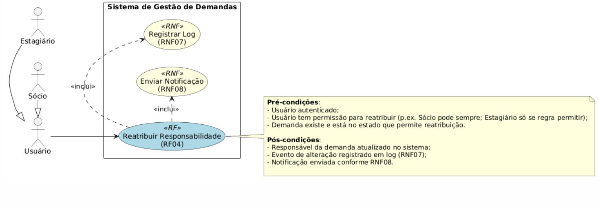

Casos de Uso
RF01 - Cadastra demanda:
- Nome do Caso de Uso: Cadastrar Demanda com Informações Detalhadas
- Atores: Sócio, Estagiário
- Objetivo: Permitir que o usuário crie uma nova demanda com informações como atividade, andamento, prazo e responsável.
- Requisitos Especiais: Registrar log (RNF07) e enviar notificação (RNF08).
Fluxo Principal:
-
Ator acessa a funcionalidade "Nova Demanda" (botão ou comando);
-
Sistema apresenta formulário de cadastro com campos obrigatórios: Título/Atividade, Descrição (opcional/fortemente recomendado), Andamento (estado inicial ou seleção), Prazo (data/hora), Responsável (usuário ou campo "sem responsável");
-
Ator preenche os campos obrigatórios e confirma (clicando em “Salvar” / “Criar”);
-
Sistema valida os dados: campos obrigatórios preenchidos, formato de data do prazo correto, responsável existe e está ativo;
-
Se validação ok, sistema cria o registro da demanda no banco de dados com um identificador único, grava timestamps (criação/última alteração) e o usuário criador;
-
Sistema registra entrada de log da operação (RNF07) com detalhes da criação (id demanda, criador, timestamp, campos principais);
-
Sistema aciona disparo de notificação (RNF08) ao responsável designado (se houver) e/ou a grupos configurados;
-
Sistema apresenta tela de confirmação ao ator e exibe a demanda criada no local apropriado (lista de demandas, quadro Kanban na coluna inicial);
-
Caso o sistema integre com workflow Kanban, o novo cartão é criado na coluna inicial conforme configuração (RF09 / RF11).
Fluxos Alternativos Críticos:
A1 — Campos obrigatórios não preenchidos
- A1.1 Se o ator tentar salvar sem preencher campos obrigatórios (p.ex. Atividade ou Prazo), o sistema bloqueia a criação e mostra mensagem indicando quais campos faltam. Volta ao passo 2.
A2 — Prazo inválido (data no passado / formato inválido)
- A2.1 Sistema mostra erro sobre o prazo inválido e solicita correção. Volta ao passo 2.
A3 — Responsável inexistente / inativo
-
A3.1 Se o responsável indicado não for encontrado ou estiver inativo, o sistema exibe um erro e sugere selecionar outro responsável ou deixar em branco. Volta ao passo 2;
-
A3.2 (Opcional) Permitir criação com “sem responsável” e registrar essa condição.
A4 — Permissão insuficiente
- A4.1 Se o ator não tiver permissão para criar demandas, o sistema nega a ação e exibe mensagem “Permissão negada”. Fluxo termina sem criar demanda.
A5 — Falha de persistência (erro do servidor / BD)
- A5.1 Sistema exibe mensagem de erro genérica (ex.: “Não foi possível salvar. Tente novamente.”) e registra erro técnico em log de sistema. Não confirma criação. (Operação pode ser reexecutada pelo usuário.)
A6 — Conflito de duplicidade
- A6.1 Se houver política de evitar duplicatas (ex.: mesmo título e data), sistema alerta o usuário e pede confirmação para criar mesmo assim ou cancelar.
Pré-condições:
-
Usuário autenticado no sistema;
-
Usuário possui permissão para cadastrar demandas;
-
Sistema com conectividade ao banco de dados e serviços de notificação.
Pós-condições:
-
Nova demanda criada com ID único e persistida;
-
Demanda aparece nas visualizações (lista, detalhe, Kanban);
-
Log de criação gravado (RNF07);
-
Notificação enviada ao responsável conforme RNF08 (se aplicável);
-
Métricas/contadores atualizados (p.ex. total de demandas do responsável).
Critérios de Aceitação:
-
Uma nova demanda pode ser criada preenchendo os campos: atividade, andamento, prazo e responsável;
-
Todas as validações são aplicadas (campos obrigatórios, formato de data, existência do responsável);
-
Ao criar, a demanda aparece imediatamente no Kanban (coluna inicial) e na lista de demandas;
-
Um registro de log (RNF07) é criado contendo id da demanda, id do usuário criador e timestamp;
-
Uma notificação (RNF08) é enviada ao responsável com informações mínimas e link para a demanda;
-
Mensagens de erro amigáveis são apresentadas quando a criação falha por validação, permissão ou erro servidor;
-
Caso o usuário não tenha permissão para criar, a operação é negada e o sistema não altera o estado;
-
Teste de integração com importador/kanban: criação via formulário e criação via API/importação resultam em comportamento consistente (mesmos logs e notificações).
RF04 - Transferir Responsabilidade:
-
Nome do Caso de Uso: Reatribuir Responsabilidade da Demanda
-
Atores: Sócio, Estagiário
-
Objetivo: Permitir alterar o responsável por uma demanda existente.
-
Requisitos Especiais: Registrar log (RNF07) e enviar notificação (RNF08).
O ator seleciona uma demanda e escolhe um novo responsável; o sistema valida permissão e existência do novo responsável, atualiza a demanda, registra o evento em log e envia notificação ao novo (e opcionalmente ao antigo) responsável.
Pré-condições:
-
Usuário autenticado.
-
Usuário tem permissão para reatribuir (p.ex. Sócio pode sempre; Estagiário só se regra permitir).
-
Demanda existe e está no estado que permite reatribuição.
Pós-condições:
-
Responsável da demanda atualizado no sistema.
-
Evento de alteração registrado em log (RNF07).
-
Notificação enviada conforme RNF08.
Critérios de aceitação (mínimos):
-
É possível selecionar uma demanda existente e indicar um novo responsável válido.
-
Após confirmação, a demanda apresenta o novo responsável em todos os views relevantes (lista, detalhe, Kanban).
-
O sistema cria um registro de log contendo: id da demanda, id do usuário que efetuou a reatribuição, id do novo responsável, timestamp e motivo/opcional.
-
Notificação (por canal configurado) é enviada ao novo responsável informando a atribuição; se configurado, o responsável anterior também é notificado.
-
Mensagens de erro informativas são exibidas quando a operação não pode ser concluída (ex.: usuário inexistente, falta de permissão, conflito de dados).
Diagrama de Caso de Uso:

RF10 - Criar Demanda no Kanban:
- Nome do Caso de Uso: Criar Demanda no Kanban
- Atores: Sócio
- Objetivo: Permitir que o Sócio crie uma nova demanda (card) diretamente em uma coluna específica do quadro Kanban.
- Requisitos Especiais: Registrar log (RNF07) e enviar notificação (RNF08).
Fluxo Principal:
- O Ator (Sócio) acessa o quadro Kanban desejado.
- O Ator aciona o comando "Adicionar Card" ou "+" na coluna de destino (ex: "Elaboração").
- O Sistema exibe um formulário rápido (inline ou modal) para a criação da demanda.
- O Ator preenche o campo obrigatório: "Título" da demanda.
- (Opcional) O Ator preenche informações adicionais (ex: Descrição, Responsável, Etiquetas).
- O Ator confirma a criação (clica em "Salvar" ou pressiona Enter).
- O Sistema valida os dados (verifica se o "Título" está preenchido).
- Se a validação for aprovada, o Sistema persiste a nova demanda no banco de dados, associando-a à coluna e ao quadro.
- O Sistema registra uma entrada de log da operação (RNF07) detalhando a criação.
- (Se um responsável foi definido no passo 5) O Sistema aciona o disparo de notificação (RNF08) para o usuário atribuído.
- O Sistema exibe o novo card na coluna do Kanban e exibe uma mensagem de sucesso (ex: "Demanda criada.").
Fluxos Alternativos Críticos:
A1 — Criação Cancelada pelo Ator (RF10-E1) * A1.1 No passo 3 ou 4, o Ator clica em "Cancelar" ou fora do formulário. * A1.2 O Sistema descarta as informações inseridas e fecha o formulário. Nenhuma demanda é criada.
A2 — Dados Inválidos ou Obrigatórios Ausentes (RF10-E2) * A2.1 No passo 7, o Sistema detecta que o campo "Título" está vazio. * A2.2 O Sistema bloqueia a criação e exibe uma mensagem de erro (ex: "O campo 'Título' é obrigatório."). * A2.3 O Sistema mantém o formulário aberto para correção (retorna ao passo 4).
A3 — Falha de Permissão (RF10-E3) * A3.1 Um Ator (Estagiário) tenta acessar esta funcionalidade (ex: por URL direto ou manipulação de interface). * A3.2 O Sistema bloqueia a ação (Pré-condição falha) e exibe "Permissão negada". O fluxo termina.
A4 — Falha de Sistema (RF10-E3) * A4.1 No passo 8, o Sistema falha ao tentar salvar no banco de dados (ex: falha de conexão). * A4.2 O Sistema exibe uma mensagem de erro genérica (ex: "Não foi possível salvar a demanda. Tente novamente.") e registra o erro técnico.
Pré-condições:
- O Ator (Sócio) deve estar autenticado no sistema.
- O Sócio possui permissão de escrita (criação) no quadro Kanban.
- O quadro Kanban existe e está carregado.
Pós-condições:
- Uma nova demanda (card) é criada e persistida no sistema.
- A nova demanda é exibida visualmente na coluna designada do Kanban.
- Log de criação gravado (RNF07).
- Notificação enviada (RNF08), se aplicável.
Critérios de Aceitação:
- Um Sócio deve conseguir criar um card no Kanban informando apenas o título.
- Um Estagiário não deve ver ou conseguir usar a opção de criar um card no Kanban.
- Se a criação falhar por falta de título, uma mensagem clara deve ser exibida.
- Se a criação falhar por erro de sistema, a demanda não deve ser criada.
- Toda criação bem-sucedida deve gerar um log (RNF07).
- Se um responsável for adicionado no momento da criação, ele deve ser notificado (RNF08).
RF11 - Mover Demanda entre Colunas:
- Nome do Caso de Uso: Mover Demanda entre Colunas
- Atores: Sócio, Estagiário
- Objetivo: Permitir que o Sócio ou Estagiário altere o status de uma demanda arrastando-a (drag-and-drop) de uma coluna para outra.
- Requisitos Especiais: Registrar log (RNF07), enviar notificação (RNF08), e verificar permissão de acesso (RNF09/RF04).
Fluxo Principal:
- O Ator (Sócio ou Estagiário) acessa o quadro Kanban.
- O Ator localiza o card da demanda que deseja mover.
- O Ator clica e segura (inicia "drag") o card.
- O Sistema "prende" o card ao cursor e (opcionalmente) destaca as colunas de destino válidas.
- O Ator arrasta o card sobre a coluna de destino desejada (ex: de "Elaboração" para "Revisão").
- O Ator solta o card (completa "drop").
- O Sistema valida a permissão da movimentação (Ver Fluxo A2).
- Se a validação for aprovada, o Sistema persiste a mudança de status/coluna no banco de dados.
- O Sistema registra uma entrada de log (RNF07) detalhando a mudança (ex: "Movido de 'Elaboração' para 'Revisão'").
- (Se aplicável) O Sistema aciona o disparo de notificação (RNF08) ao responsável pela nova etapa (ex: Sócio, para revisar).
- O Sistema atualiza a interface, movendo visualmente o card para a nova coluna, e exibe uma mensagem de sucesso.
Fluxos Alternativos Críticos:
A1 — Movimentação Cancelada pelo Ator (RF11-E1) * A1.1 No passo 6, o Ator solta o card fora de uma coluna de destino válida (ex: de volta na coluna original ou fora do quadro). * A1.2 O Sistema cancela a operação e retorna o card visualmente à sua posição original. Nenhuma alteração é salva.
A2 — Movimentação Inválida (Restrição de Permissão) (RF11-E2) * A2.1 No passo 7, o Ator é um Estagiário e o card movido não pertence a ele. * A2.2 O Sistema bloqueia a persistência (passo 8) e exibe uma mensagem de erro (ex: "Você só pode mover suas próprias demandas."). * A2.3 O Sistema retorna o card visualmente à sua posição original.
A3 — Falha de Sistema ou Conexão (RF11-E3) * A3.1 No passo 8, o Sistema falha ao salvar a mudança no banco de dados (ex: falha de conexão). * A3.2 O Sistema exibe uma mensagem de erro genérica (ex: "Erro ao mover a demanda. Tente novamente."). * A3.3 O Sistema reverte a mudança visual, retornando o card à sua coluna original para manter a consistência.
Pré-condições:
- O Ator (Sócio ou Estagiário) deve estar autenticado.
- A demanda (card) existe e está visível no quadro.
- O Ator deve ter permissão para mover o card (Sócio: permissão total; Estagiário: apenas se for o responsável pela demanda, conforme RF04).
Pós-condições:
- O status/coluna da demanda é atualizado e persistido no banco de dados.
- A demanda é exibida visualmente na nova coluna.
- Log de movimentação gravado (RNF07).
- Notificação enviada (RNF08), se aplicável.
Critérios de Aceitação:
- Um Sócio deve conseguir mover qualquer card entre quaisquer colunas válidas.
- Um Estagiário deve conseguir mover um card que esteja atribuído a ele.
- Um Estagiário não deve conseguir mover um card que não esteja atribuído a ele.
- Se um card for solto em um local inválido, ele deve retornar à coluna original.
- Toda movimentação bem-sucedida deve ser registrada no log (RNF07).
- Se a movimentação falhar (ex: perda de conexão), o card deve retornar ao local original sem salvar a mudança.
Diagrama de Caso de Uso: